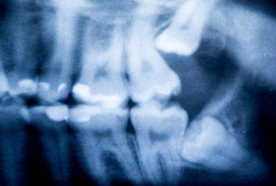
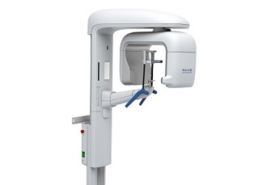
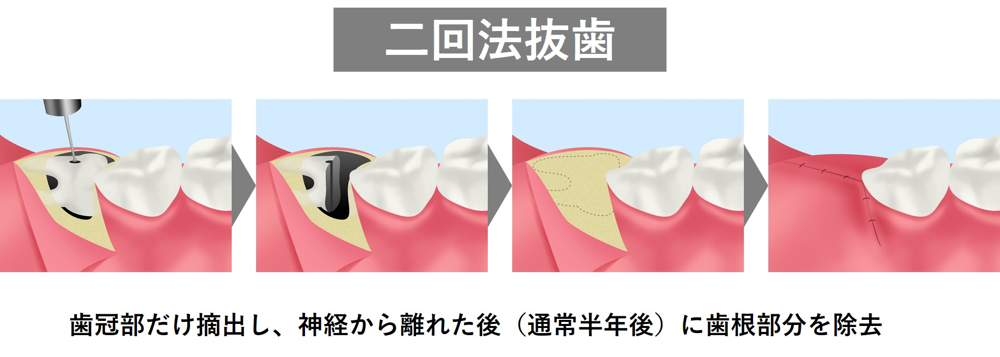
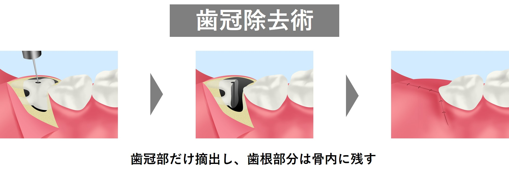

- ホーム
- 親知らずの抜歯
天王寺まつい総合歯科の親知らずの治療
親知らずとは

親知らずとは、「第三大臼歯（だいさんだいきゅうし）」とも呼ばれる歯で、歯列の最後方に生えていきます。生えてくる時期も一番遅く、20歳前後が一般的です。上下で合計4本あり、すべて生えてくる人もいれば、1本も生えてこないひともいます。
過剰歯と呼ばれる歯の数が多い異常とは異なり、けっしていらない歯ではないのですが、親知らずは、いろいろな点でトラブルのもとになりやすい奥歯といえます。
抜く、抜かないの基準
親知らずは「いずれ抜くもの」というイメージが強いですが、抜かなくても良い親知らずもあります。親知らず抜く、抜かないの基準は以下の通りです。
抜いた方が良い親知らず
- 親知らずに虫歯が生じており、かつ治療効果の低い生え方をしている
- 親知らずの周囲に重度の歯周病があり、かつ治療効果の低い生え方をしている
- 親知らずが横に向いて埋まっており手前の歯に悪影響を及ぼしている（歯根吸収など）
- 生え方が異常であり、そのせいで清掃性があまりにも悪い
親知らずを抜く判断として、親知らずそのものが口全体に対して悪影響を及ぼしており、抜くデメリット（腫れや痛みなど）よりもメリットが大きい場合は親知らずの抜歯は必要であると考えます。
抜かなくても良い親知らず
- 上下ともに正常に生えている・正常に噛んでいる
- 歯茎の中に真っ直ぐではあるが埋まっている
- 将来的に移植歯や土台として活用できる
- 周りの歯に悪影響を及ぼしていない
このように、生え方と噛み方が正常で、周りの歯に悪影響を及ぼしていない親知らずは、基本的に抜く必要はありません。また、親知らずもかけがえのない天然歯のひとつですので、将来的に移植歯や土台として活用できるのであれば、積極的に保存することをおすすめします。
当院の親知らず治療の特色
歯科用CTを使用

親知らずのすぐ近くには、下歯槽神経（かしそうしんけい）と呼ばれる大切な神経が走行しています。親知らずを抜歯する際、この神経を傷付けてしまうと、下唇やその周囲の感覚が麻痺するなどの症状が現れることがあります。
で当院では、親知らずの抜歯を安全に行うために、パノラマレントゲン撮影だけでなく、歯科用CTによる撮影も行っております。
歯科用CTであれば、親知らず周囲の3次元的な画像が得られるため、下歯槽神経が収まっている下顎管の位置も正確に把握することができます。その結果、抜歯に伴う偶発症を避けることが可能となります。
安全な2回法を実施
親知らずの抜歯には、1回法と2回法の2種類があります。1回法は、文字通り1回の処置で親知らずを完全に抜歯する方法です。ただ、親知らずが下歯槽神経と近接しているような症例では、神経の損傷などが生じやすくなります。そこで当院では、神経と近接している場合は、万全を期して2回法を実施するようにしています。

2回法とは、初回で親知らずを2分割して、歯冠の部分のみを抜き取り、その日は一旦終了し、生じたスペースに残った根の部分が神経から離れるように移動してきた後（通常半年移行後）に、2回目で残りの歯根の部分も抜去する方法です。処置を2回に分けることで、安全性が高まります。
症例に応じて歯冠除去術を実施
親知らずが下歯槽神経と近接しているような症例では、2回法だけでなく「歯冠除去術」を使う場合もございます。歯冠除去術とは、2回法と同じように歯を分割し、歯冠のみを除去して、神経に接している下の歯根の部分は骨内に残します。

歯冠除去術は通常の親知らずの抜歯と比べて、安全性や負担が少ない処置です。
このように当院では、親知らずの抜歯において安全性を第一に考え処置を行っておりますので、親知らずでお困りの方はお気軽にご相談ください。